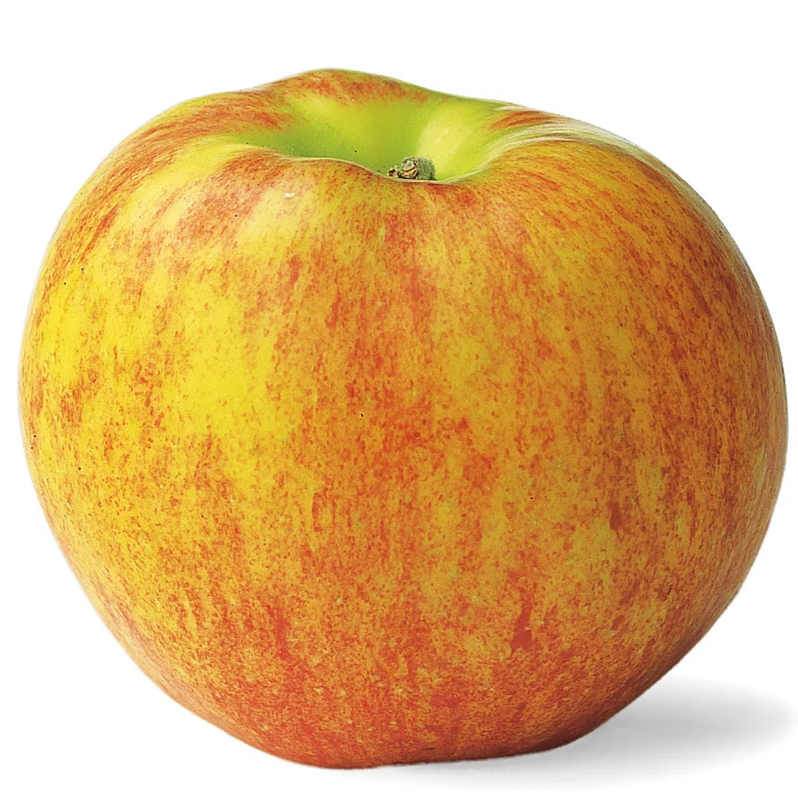

| Rang | Name | Spitzname | Bild | Beschreibung | Saison |
|---|---|---|---|---|---|
| 1 | Gala | Der Beliebte |
Gala wurde 1934 erstmals in Neuseeland gezüchtet und ist heute die beliebteste Apfelsorte in der Schweiz. Sie sieht optisch gut aus und ist das ganze Jahr über im Angebot. Rund 30'400 Tonnen des süssen, handlichen Apfels wurden im Jahr 2020 in der Schweiz verkauft. Die Sorte enthält im Vergleich zu anderen viel Zucker und wenig Säure. Deshalb ist Gala besonders bei Kindern beliebt. Gala wird in der Schweiz überall angebaut und reift als eine der ersten Apfelsorten. |
August bis Juni | |
| 2 | Golden Delicious | Der Süsse |
Golden Delicious wurde 1890 in den USA zufällig entdeckt. Heute ist es die Apfelsorte, die weltweit am meisten verbreitet ist und auch in Europa am häufigsten angebaut wird. Im Durchschnitt werden in der Schweiz pro Jahr 13'400 Tonnen Golden Delicious verkauft. Aufgrund des geringen Säuregehalts und des milden Geschmacks ist diese Apfelsorte bei Herstellern von Babynahrung besonders beliebt. Aber auch in der Küche ist Golden Delicious ein Multitalent. Genau wie Gala bevorzugt er kein spezielles Anbaugebiet und wird überall in der Schweiz angebaut. |
September bis August | |
| 3 | Braeburn | Der Neuseeländer |
Ebenfalls aus Neuseeland stammt die Sorte Braeburn. Dort wurde sie 1950 entdeckt. Braeburn ist eine der Vitamin-C-reichsten Sorten und verfügt über einen leicht säuerlichen Geschmack. Da das Fruchtfleisch nach dem Anschneiden nur langsam braun wird, eignet sich dieser Apfel gut zum Verarbeiten in der Küche. Insbesondere Backen lässt sich's gut mit dem Braeburn. |
Oktober bis Juni | |
| 4 | Jazz | Der Schönling |
Auch die Apfelsorte Jazz stammt ursprünglich aus Neuseeland und entstand durch die Kreuzung von Braeburn und Royal Gala. Der eigentliche Name lautet Scifresh. Umbenannt auf Jazz wurde die Sorte aus Marketinggründen. Der Apfel besticht durch sein saftiges und knackiges Fruchtfleisch sowie seinen süss-säuerlichen Geschmack. Die Zucker-Säure-Balance dieses Apfels ist optimal. Die Sorte eignet sich hautpsächlich zum frisch Essen, aber auch zum Kochen und Backen. Jazz ist sehr wärmeliebend und wird deshalb vor allem im Wallis und in der Westschweiz angebaut. |
Oktober bis Juni | |
| 5 | Pink Lady | Die Frische |
Die Sorte Pink Lady, die mit richtigem Namen Cripps Pink heisst, enstand 1973 in Westaustralien durch eine Zufallskreuzung zwischen Lady Williams und Golden Delicious. Sie ist die Clubsorte par Excellence und markenrechtlich geschützt. Das bedeutet: Wer diese Sorte anbauen will, muss einem Club beitreten und bestimmte Richtlinien einhalten. Pink Lady eignet sich vor allem zum frisch Essen, kann aber auch zum Kochen und Backen verwendet werden. Das Fruchtfleisch ist fest, eher saftig und säuerlich-süss. Speziell an dieser Apfelsorte ist ihre späte Erntezeit. Da sie erst Anfang bis Mitte November geerntet wird, wird sie vor allem im sonnigen Wallis angebaut. |
Dezember bis Juni | |
| 6 | Diwa | Die Schweizerin |
Die Apfelsorte Diwa ist eine Schweizer Züchtung. Über mehrere Jahre wurde diese Sorte an der Agroscope, dem Kompetenzzentrum der Schweiz für landwirtschaftliche Forschung, gezüchtet und optimiert. Sie wird fast ausschliesslich in der Ostschweiz angebaut. Diwa ist aber auch im Ausland bekannt und ist vor allem in den Niederlanden, in Deutschland und Dänemark verbreitet. Mit ursprünglichem Namen heisst die Sorte Milwa. Aufgrund einer Namensumfrage der Agroscope kam sie aber zu ihrem heutigen Marketingnamen. In der Europäischen Union und in den USA lautet er Junami. Das Fruchtfleisch ist fest, saftig und sehr fruchtig im Geschmack. Auch Diwa eignet sich sowohl für den frischen Verzehr als auch in der Küche. |
Oktober bis Juni | |
| 7 | Gravensteiner | Der Uralte |  |
Der Gravensteiner ist eine uralte Apfelsorte, die 1669 in Dänemark entdeckt und nach einer dänischen Ortschaft benannt wurde. Dieser Apfel ist einer der ersten im Jahr, der geerntet werden kann, und wird im Wallis und in der Ostschweiz angebaut. Sein Fruchtfleisch ist fest, saftig und etwas säuerlich. Leider ist diese Apfelsorte eher schlecht lagerfähig und wird schnell mehlig. Am Besten schmeckt der Gravensteiner ausgereift, also direkt vom Baum. |
August bis Oktober |
| 8 | Jonagold | Die Deutschschweizerin |
Die Apfelsorte Jonagold enstand 1935 aus einer Züchtung in den USA. Seit den 1970er-Jahren ist sie auch auf dem europäischen Markt beliebt. Der Geschmack fällt auf durch seine aromatische Süsse. Durch die Lagerung wird diese Sorte aber etwas weich. Jonagold eignet sich zum frisch Essen, aber auch zum Kochen und Backen. Nach dem Anschneiden verbräunt diese Sorte jedoch rasch. In der Westschweiz wird diese Apfelsorte kaum angebaut und ist deshalb deutlich weniger beliebt als in der Deutschschweiz. |
September bis August | |
| 9 | Boskoop | Der Urchige |
Der Boskoop ist eine ältere Apfelsorte, die heute in der Schweiz vor allem in der Ostschweiz angebaut wird. 1856 wurde sie in den Niederlanden entdeckt und ist nach einer niederländischen Ortschaft benannt. Bekannt ist der Boskoop als typischer Verarbeitungsapfel, der einen etwas urchigen und bodenständigen Charakter hat. Aufgrund des hohen Zucker- und Säuregehalts eignet er sich besonders gut für Apfelmus, Apfelwähen oder auch zur Mostverarbeitung. Diese Apfelsorte ist sehr robust und gut lagerbar. Letztes Jahr wurden in der Schweiz rund 2000 Tonnen dieser Sorte verkauft. |
September bis Mai | |
| 10 | Elstar | Der Aromatische |
1955 wurde die Apfelsorte Elstar in den Niederlanden gezüchtet. Ihr Verkauf ist etwas rückläufig, denn manchen ist sie zu weich und mehlig. Beliebter ist heute ihre Nachfolgerin Diwa, eine Züchtung aus Maigold und Elstar. Die Apfelsorte verfügt jedoch über einen sehr aromatischen Geschmack und wird deshalb meist frisch gegessen. Sie eignet sich aber auch zum Kochen und Backen. Mit einer Menge von durchschnittlich rund 800 Tonnen verkaufter Früchte pro Jahr, schafft es Elstar gerade noch in die Top 10 der beliebtesten Schweizer Apfelsorten. |
September bis März |